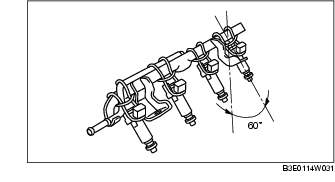
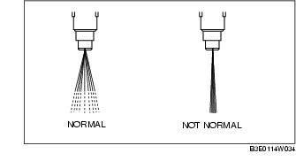

Fuel injector inspection [ZY]
Resistance Inspection
1. Turn the ignition switch to the LOCK position.
2. Disconnect the negative battery cable.
3. Disconnect the fuel injector connector.
4. Inspect the resistance between fuel injector terminals A and B using a tester.
- • If within the specification, perform the "Circuit Open/Short Inspection".
- • If not within the specification, replace the fuel injector. (See FUEL INJECTOR REMOVAL/INSTALLATION [ZY].)
Circuit Open/Short Inspection
1. Disconnect the PCM connector. (See PCM REMOVAL/INSTALLATION [ZY].)
2. Inspect the following wiring harnesses for an open or short circuit (continuity check).

Open circuit
- • If there is no continuity, the circuit is open. Repair or replace the harness.
- - Fuel injector No.1 terminal A and PCM terminal 2E
- - Fuel injector No.1 terminal B and PCM terminal 2A
- - Fuel injector No.2 terminal A and PCM terminal 2F
- - Fuel injector No.2 terminal B and PCM terminal 2B
- - Fuel injector No.3 terminal A and PCM terminal 2G
- - Fuel injector No.3 terminal B and PCM terminal 2C
- - Fuel injector No.4 terminal A and PCM terminal 2L
- - Fuel injector No.4 terminal B and PCM terminal 2H
Leakage Inspection
- • Fuel line spills and leakage from the pressurized fuel system are dangerous. Fuel can ignite and cause serious injury or death and damage. To prevent this, complete the following inspection with the engine stopped.
- • If there is foreign material on the connecting area of the quick release connector, it might damage the connector or fuel pipe. To prevent this, disconnect the connector and clean the connecting area before connecting.
1. Follow "BEFORE SERVICE PRECAUTION" before performing any work operations to prevent fuel from spilling from the fuel system. (See BEFORE SERVICE PRECAUTION [ZY].)
2. Disconnect the negative battery cable.
3. Remove the fuel injector and fuel distributor as a single unit. (See FUEL INJECTOR REMOVAL/INSTALLATION [ZY].)
4. Fix the fuel injector to the fuel distributor with a wire or the equivalent.

5. Connect the quick release connector to the fuel distributor. (See QUICK RELEASE CONNECTOR REMOVAL/INSTALLATION [ZY].)
6. Start the fuel pump using the following procedure.
Using WDS or equivalent

Without using WDS or equivalent

- • Be careful to short the specified terminal as shorting the wrong terminal of the main fuse block may cause a malfunction.
7. Tilt the fuel injector at an angle of 60° to inspect for leakage.

- • If not within the specification, replace the fuel injector. (See FUEL INJECTOR REMOVAL/INSTALLATION [ZY].)
8. Stop the fuel pump using the following procedure.
Using WDS or equivalent
Without Using WDS or equivalent
9. Remove the wire or the equivalent securing the fuel injector.
10. Install the fuel injector. (See FUEL INJECTOR REMOVAL/INSTALLATION [ZY].)
11. Inspect all related parts by performing "AFTER SERVICE PRECAUTION". (See AFTER SERVICE PRECAUTION [ZY].)
Injection volume Inspection
- • Fuel line spills and leakage from the pressurized fuel system are dangerous. Fuel can ignite and cause serious injury or death and damage. To prevent this, complete the following inspection with the engine stopped.
- • If there is foreign material on the connecting area of the quick release connector, it might damage the connector or fuel pipe. To prevent this, disconnect the connector and clean the connecting area before connecting.
1. Follow "BEFORE SERVICE PRECAUTION" before performing any work operations to prevent fuel from spilling from the fuel system. (See BEFORE SERVICE PRECAUTION [ZY].)
2. Disconnect the negative battery cable.
3. Remove the fuel injector and fuel distributor as a single unit. (See FUEL INJECTOR REMOVAL/INSTALLATION [ZY].)
4. Fix the fuel injector to the fuel distributor with a wire or the equivalent.
5. Connect the SST to the corresponding fuel injector and battery.

6. Connect the quick release connector to the fuel distributor. (See QUICK RELEASE CONNECTOR REMOVAL/INSTALLATION [ZY].)
7. Start the fuel pump using the following procedure.
Using WDS or equivalent

Without using WDS or equivalent
- • Be careful to short the specified terminal as shorting the wrong terminal of the main fuse block may cause a malfunction.

8. Measure the fuel injection volume.
Fuel injection volume9. Stop the fuel pump using the following procedure.
Using WDS or equivalent
Without Using WDS or equivalent
10. Remove the wire or the equivalent securing the fuel injector.
11. Install the fuel injector. (See FUEL INJECTOR REMOVAL/INSTALLATION [ZY].)
12. Inspect all related parts by performing "AFTER SERVICE PRECAUTION". (See AFTER SERVICE PRECAUTION [ZY].)
Atomization Inspection
1. Inspect the atomization status.
